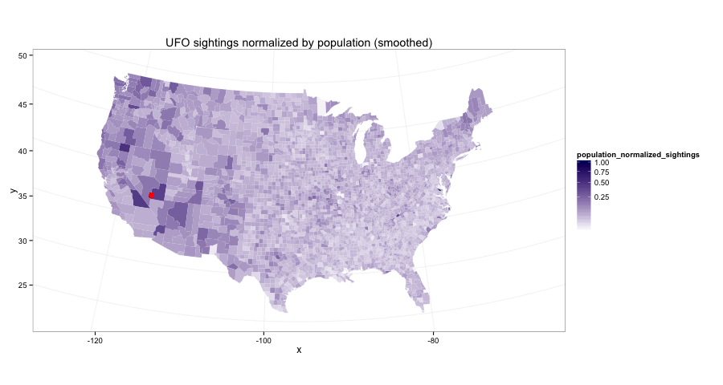
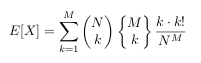
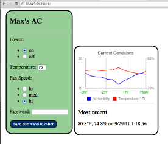

Neat things
| Fancy Bayesian AB testing | 6-14-14 |
| Heatmap of UFO sightings | 5-25-14 |
| Wikipedia link graph, MapReduce, PageRank | 12-1-12 |
| travelling salesman problem | 6-9-12 |
| balls and bins | 3-28-12 |
| instagram challenge: unshredder | 11-15-11 |
| mobile air conditioner control | summer 2011 |
| independent chip model | 2004 |
Fancy Bayesian AB testing
6-14-14
I take a slightly different approach to Bayesian AB testing that explicitly models the expected effect size.
Read all about it.

Heatmap of UFO sightings
5-25-14
There's a lot of stuff for this one, read the full article.
Going from this
which looks a lot like this

and doing the work to get to this
Wikipedia link graph, MapReduce, PageRank
12-1-12
As an excuse to play with some Amazon Web Services credit ($100) I got from a class, I decided to mess around with the Wikipedia link graph . The main file expands to 20GB+ and is in an inconvenient format, and so Amazon's Elastic MapReduce was a useful tool to parse it in a reasonable amount of time and build the graph.
The files:
- enwiki-latest-pagelinks.sql.gz -- Contains most of the information needed to build the graph. It's a MySQL dump where rows contain triples of the form (from page ID, namespace, to page name). Annoyingly, the "to pages" are given with their text name which needs to be converted to an ID. The next file includes the necessary info to do the mapping. We are only concerned with the "Main" namespace; the others (e.g. Talk and Help pages) should be discarded.
- enwiki-latest-page.sql.gz -- Contains information for each page, in particular both its text name and integer ID.
I launched an EC2 instance, downloaded the files, unzipped them, then pushed them onto S3. The pagelinks.sql file is so large that this wasn't completely straightforward. I ended up using boto to push it up in smaller 2GB chunks.
With the graph built, it's a pretty staightforward task to build the in and out degree distributions. For fun, I used EMR to do this as well, though it's a simple enough task to run on single machine. I should include some comments and graphs on the distributions here. (UPDATE: I did this, see below)
Next I tried for each page to compute the top ten most similar pages based on out-link structure. I failed to do this, and gave up after exhausting my $100 budget. It's a tough task to parallelize, and similar to k-nearest neighbors in that each subtask needs to know the whole graph. I've read of clever ways to combat this, e.g. locality-based hashing, but didn't get around to implementing any.
The next step is PageRank, a fairly straightforward linear algebra problem. This can be parallelized easily (just matrix-vector multiplication) but needs to chain together multiple MapReduce tasks. I couldn't find a simple way to do this within the EMR framework, though I bet there is a way to do it.
The wikipedia graph is small enough, however, that it might fit into memory on a single machine. I haven't gotten around to doing this yet.
UPDATE
The wikipedia graph does indeed fit into memory, 2GB as a sparse matrix in scipy. I implemented PageRank and played with it a bit, nothing too exciting. I should put together a graph or table or something. (UPDATE: I did this, see github link below)
Also, I am told that Pig is a good tool for doing high-level mapreduce jobs and it can be used on AWS. I should look into that.
UPDATE 12-30-13
Luke Stanley actually needed to use this for a real purpose. I helped him out; see some results and discussion on github. Includes some graphs on the inlink and outlink distributions for the Tagalog wikipedia.
Travelling Salesman Problem (TSP)
6-9-12
Given a list of cities and their pairwise distances, the task is to find the shortest possible route that visits each city exactly once and returns to the origin city
A colleague of mine had recently learned a simulated annealing approach to approximately solving this which he bragged about. I scoffed, telling him I could solve it exactly, and much faster. I was wrong at first, but after a year I did learn all the necessary pieces.
I used the cutting-plane method (described pretty well above) using a Columbia CS student's code to find the mincuts, and gurobi to solve the integer program. 50ish lines of python outside of those two subroutines, and really fast for 20 cities, less than a tenth of a second typically.
Balls and bins
3-28-12
My friend Chris posed this problem:
Imagine an array of N cups. High above the cups you drop M ping pong balls, so that the probability of a ball entering any cup is totally uniform.
What is the expected number of occupied cups (or empty cups, whatever)? Assume each cup is big enough to hold all M balls should they all fall in one.
Application:
When I worked on a medical imaging device, we used these things called solid state photo multipliers. The way it works is exactly analogous to dropping in M photons into N boxes and counting the non empty boxes. We always assumed that K non-empty boxes implied K incident photons (which is a solid approximation for M << N), but I was always curious about how to account for saturation effects once M ~ N.
My answer:

solution (pdf)
UPDATE
My solution is way too complicated. There is a much easier way to go about it by using the linearity of expectation; that is, the expected number of non-empty cups is simply the sum over all cups of the probability that a particular cup is non-empty (since the cups are independent). It also allows a simple answer to the follow-up question: what is the limit as N goes to infinity of E[# bins filled from N balls in N bins]/N ? Both the simpler solution and the follow up question are left as an exercise for you. (It really is pretty straightforward and satisfying, try it.)
Instagram Challenge: Unshredder
11-15-11
Given an image randomly sliced into vertical strips, can you piece back together the original?
Mobile air conditioner control
Summer 2011
Control your air conditioner via website. Arduino project #1

Independent Chip Model (ICM)
2004
How valuable are the different stacks in a poker tournament with a top-heavy payout structure? How does this influence strategy?
twoplustwo magazine article reposted on some German poker blog. I got paid $200 to write this in college, which made me feel pretty cool. It's been linked around quite a bit and even cited in a super detailed analysis of the value of a chip in a tournament, in Japanese.
Original post on twoplustwo forums